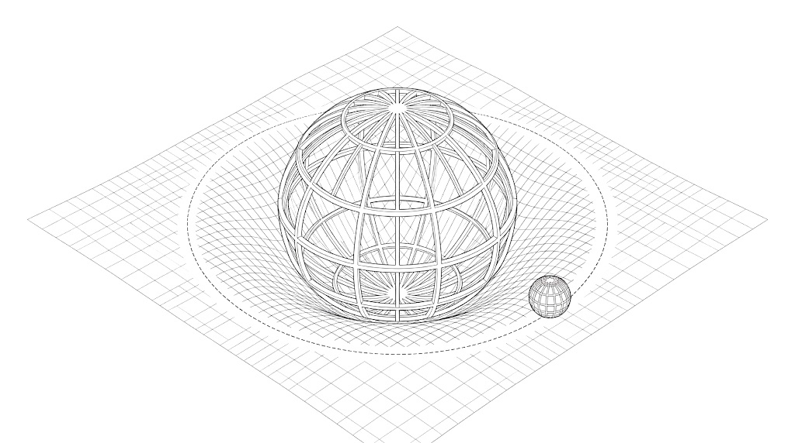

Einstein 花了十年做一件事：他拒絕接受一個巧合。牛頓力學裡有兩個「質量」，一個管物體多難被推動、一個管重力多用力拉它，它們在數學上毫無理由要相等，但實驗量到它們一模一樣。所有人都當它是巧合，只有他把它當成線索。這篇是那條線索一路走到底的完整路徑：從一個沒人在意的等式，走到時空是彎的、走到黑洞、走到我們怎麼確認黑洞真的存在，最後停在一個現在才有意義的問題——這種「幾乎不靠實驗、純靠想」的成功，AI 能不能複製。
Adam Brown 現在帶 Google DeepMind 的 Blueshift 團隊，做的是讓 AI 攻科學與推理；在那之前他是史丹佛的物理學家，教過二十堂課的廣義相對論研究所課程。這集訪談的設定很單純：不上那二十堂課，能不能讓一般人摸到這套理論為什麼被稱為「人類單一心智產出過最美的東西」。他自己說，十週的課能讓學生對廣義相對論的理解，超過 Einstein 摸索十年後的程度——因為我們有 Einstein 這些人在前面替我們把複雜的東西煮到只剩精華，而且不必重犯他們犯過的錯。
01先看一個沒人在意的巧合▶ 0:00
要懂廣義相對論在解什麼問題，得先知道 1915 年之前的物理長什麼樣。1905 年 Einstein 提出狹義相對論，把「沒有東西能跑得比光快」從一個觀察升格成一條原理，然後極其認真地拿它推導整個時空的樣子。這條原理套進電磁力、強核力、弱核力都沒問題，唯獨套不進重力。
問題出在牛頓的重力公式。牛頓說兩個物體之間的重力＝常數 × 質量一 × 質量二 ÷ 距離平方。這條式子的麻煩在於它是瞬間的：如果你晃動太陽，地球感受到的力立刻就改變，不是八分鐘後改變。那等於你可以用重力傳遞比光快的訊息——用重力做一支超光速電話。Einstein 花了很多年清掉所有超光速的可能性，不打算在這裡讓步，所以他認定要退讓的是牛頓那條式子。
這件事有前例。電力也有一條長得幾乎一樣的平方反比公式（常數 × 電荷一 × 電荷二 ÷ 距離平方），一樣看起來跟狹義相對論衝突，但最後沒事——因為靜電力只是完整電磁理論的一個特例，Maxwell 方程組裡還有磁力，那些額外的項合起來剛好讓整套理論跟光速上限完全相容。歷史上其實是反過來走的：Maxwell 先寫下方程組，後人才發現「咦，它本來就不允許超光速」，這個性質叫勞侖茲對稱性，而它正是後來引導 Einstein 想出狹義相對論的線索。
所以最自然的想法是：把電磁學那招原封不動搬給重力就好。但有兩個障礙，兩個都寫在公式裡。
第一個障礙是符號。兩個正質量互相吸引，兩個同號電荷互相排斥。如果你對重力做跟電磁學數學上完全相同的操作，你會得到數學上完全相同的結果——也就是「同質量互相排斥」，那顯然是錯的。（用現代語言講，靜電力由自旋 1 的光子傳遞，重力由自旋 2 的粒子傳遞，符號差別就是從這來的。）
第二個障礙才是那條線索，也是 Einstein 天才的地方：在一堆雜訊裡認出這件事很重要。在電磁學裡，扮演「電荷」角色的東西跟質量毫無關係——中子很重但不帶電，電子很輕但帶高電荷，兩者之間沒有任何必然關聯。但在重力裡，站在「電荷」位置上的東西就是質量本身，而且是同一個質量：牛頓第二定律 F=ma 裡那個抵抗加速的 m，跟重力公式裡那個被拉的 m，完全相等。
牛頓自己就注意到並做過實驗，驗到千分之一；到 Einstein 的年代已知精確到十億分之一；今天我們知道它精確到 1015 分之一。這也是為什麼在真空中同時放開羽毛和磚頭，它們會同時落地：磚頭受到的重力大得多，但它抵抗加速的能力也剛好大同樣的倍數，兩者精確抵銷。
在牛頓的框架裡，這純粹是巧合，一個沒有任何理由的數值同一。Einstein 拒絕接受它是巧合，並把它當成整條路的起點。這個等式後來被稱為等效原理。
02從一個水桶到「時空是彎的」▶ 16:42
上一段留下的問題是：這個巧合到底在暗示什麼？Adam Brown 的答案是，自然界裡確實有另一類力天生就長成這樣，而且不是巧合、是必然。
他當場在攝影棚拿了一桶水甩圈。水桶到頂端整個倒過來時，水沒有掉出來。這件事有兩種講法：站在地上看，是水還來不及往下掉，桶子就已經轉走了；但如果你想像自己跟著水一起繞圈，就會說是離心力把水按在桶底。
關鍵在於離心力的大小取決於什麼。答案是慣性質量——跟重力一樣、跟靜電力不一樣。但在離心力這裡，這件事一點都不神祕：你之所以感受到這股力，正是因為質量想走直線，而你偏偏在繞圈。所以只要是這種由慣性造成的力（離心力、科氏力等等），它的「電荷」必然是慣性質量，沒有例外。
於是 Einstein 跳了：重力會不會根本就是一種慣性力？電磁力不可能是，因為那要求電荷等於慣性質量，而那是假的；重力則剛好被允許。更漂亮的是，這麼一想，那個巧合就不再是巧合，而變成世界的必然事實。這是 1907 年他的核心想法，他自己稱為「最快樂的想法」。
但這個想法聽起來很瘋，瘋在一個地方：慣性力只在你沒走直線的時候出現。所以如果重力是慣性力，我們就得說：漂浮的太空人在走直線，而此刻坐在椅子上、感覺到重力把你壓進椅墊的你，沒有在走直線。我們對誰在走直線這件事，得錯得很徹底。
Adam Brown 用了一個你一定看過的畫面來說明這種錯法。飛機椅背螢幕上的航線圖：從舊金山飛倫敦，航線不是直直橫過大西洋，而是繞一大圈掠過格陵蘭。坐在後排會覺得航空公司在繞遠路。但你知道那才是最短路徑——螢幕上那條看起來筆直的線（叫做等角航線）其實不是直線。地圖之所以騙你，是因為它硬要把圓的地球畫在平面上。
時空也一樣。你把粉筆往上拋，它畫出一條拋物線——在「時空是平的」這張圖上它看起來是彎的，但它其實正在自由落體，在真實的彎曲時空裡，那才是直線。而你坐著不動、在圖上畫出一條水平線的那個狀態，才是被彎折的路徑，所以你感受到重力。
剩下的工作只有一件：用數學精確描述時空怎麼彎。這一步花了 Einstein 八年（1907 到 1915），最後的成果是他的場方程式。等號左邊是描述時空彎曲程度的量（時空平坦時它為零），右邊不是時空、而是物質與能量。整條式子在說：物質告訴時空怎麼彎；時空的彎曲告訴物質怎麼走。物質沿著彎曲時空裡的直線前進，如果你硬要假裝時空是平的，就會看到它受到「虛設的力」——那就是重力。
這裡值得停一下感受一下規模。牛頓的成就是用一條公式同時描述蘋果落地和行星運行，把天上和地上統一起來，這在當時已經是驚人的跨度。廣義相對論做到牛頓做到的全部，然後再往上一層：它同時描述蘋果落地、水星軌道，以及整個宇宙的膨脹與命運。

質量把時空壓彎小球只是沿著彎面走它的直線03黑洞是被一個「不准有永動機」的論證逼出來的▶ 31:46
理論寫完了，接下來要看它推出什麼。廣義相對論最著名的產物是黑洞，而且黑洞是牛頓物理裡不存在的東西。這一段最值得注意的不是黑洞本身，是推論的順序：黑洞不是先被看到才被相信的，是先被一個純粹的邏輯論證逼出來的。
Einstein 自己以為場方程式複雜到不可能有精確解，永遠只能做近似。他錯了。Schwarzschild 是一戰時的普魯士砲兵軍官，在計算砲彈彈道的空檔，在 Einstein 寫下方程式後幾個月內就找到了一個精確解。那個解描述的就是黑洞——雖然當時沒人這麼叫，而且接下來半世紀所有人都在寫錯的東西。最嚴重的犯錯者是 Einstein 本人，他對事件視界極度困惑，寫過各種關於物體會從視界「彈開」的錯誤說法。
那正確的直覺是什麼？Adam Brown 用一個不需要廣義相對論就能懂的思想實驗帶出來。
先講一個 18 世紀就有人想過的粗糙版本：要脫離地球需要達到逃逸速度，地球約每秒 11 公里，越重越緻密的天體逃逸速度越大。那想像一個重到、緊密到逃逸速度剛好等於光速的天體會怎樣？把光速代進公式，會得到一個臨界半徑 2GM/c²（物體本身的質量會消掉）。Michell 和 Laplace 在 18 世紀末就寫下過這條式子，說這種天體的光跑不出來。這個推理以現代標準看並不嚴謹，但答案居然是對的，連前面那個 2 都對——純屬巧合。
Adam Brown 給了一個更有說服力的論證，而且它的形式是「否則就會出事」：
拿一塊質量 m 的磚頭，從很遠的地方用滑輪系統慢慢垂降到地球表面，以零速度放下。這個過程可以榨出能量，因為有一股力在拉磚頭、而你讓它移動了一段距離。榨出多少？牛頓力學有現成公式。接著問一個只有發明了狹義相對論才會想到的問題：這佔磚頭靜質量能量 mc² 的百分之幾？答案是 7×10-10，非常小。這也解釋了為什麼在地球表面要做到非常靈敏的實驗才看得到廣義相對論效應——地表的重力束縛能在自然單位下實在太小了。
7×10-10 這個數字，跟氫氧火箭燃料的化學鍵能佔其靜質量的比例（1.5×10-10）非常接近，而這兩個數字來自完全無關的計算：一個是地球的重力性質，一個是氫和氧的化學性質。它們幾乎相等，正是為什麼我們能用化學火箭上太空、但非常吃力（前者比後者大幾倍，所以酬載比例很低，發射台上絕大部分質量都得先燒掉）。如果地球是太陽表面那種等級，化學火箭就完全不可能了。
現在把天體換重、換緻密，能榨出的比例就變大。降到太陽表面約 2×10-6；把太陽的質量塞進地球大小（那大致就是天狼星 B 這種白矮星）又更大。但顯然有什麼東西必須在某個地方喊停：照公式看，如果天體緻密到半徑小於 GM/c²，你榨出的比例會超過 100%。
這就不只是奇怪，而是壞掉了。你在遠處拿到超過 mc² 的能量，可以拿它去造一塊全新的磚頭，然後把新磚頭再垂降一次。你憑空造出了無限能量。
所以在到達那個半徑之前，一定有什麼東西會出錯。有兩種可能的出錯方式。一種是重力在近距離變弱，弱於牛頓的預測——電磁學就是這樣自救的，兩個電荷靠太近時因為量子效應會「糊掉」，吸引力不再照平方反比增強，你就榨不出更多能量。廣義相對論選的是相反的那條：重力變得比牛頓預測的更強，強到你根本沒辦法慢慢把磚頭垂降下去——重力在某個有限的距離上（不是在 r=0）變成無限大，磚頭直接被從你手裡扯走。你形成了一個黑洞。
04三條公式，和為什麼黑洞是終極發電廠▶ 47:12
上一段全部是牛頓力學加上一點光速常數，只能算「暗示」。要真的回答，得用 Schwarzschild 解。Adam Brown 寫下三條公式，而他強調這三條其實是同一件事的三種說法。
公式一：你需要多用力才不會掉下去。牛頓的答案是 GM/r²；廣義相對論在後面乘上一個修正因子 1/√(1-2GM/c²r)。離黑洞很遠時這個因子約等於 1，牛頓定律原封不動回來；靠近時它讓重力比牛頓更強。當半徑等於 2GM/c²（這叫史瓦西半徑）時，你需要無限大的加速度才能保持靜止——那就是事件視界。過了它，無論你的火箭多強，你都必定被拉向中心。
這裡有個反直覺的補充。你可能會想：那我不要靜止，我高速繞著它轉，用離心力撐住不就好了？遠離黑洞時這確實有用，這也正是國際太空站不掉下來的原因，科幻片裡「黑洞會把周圍一切吸進去」是錯的，你可以好好地繞著黑洞公轉。但靠近時繞行會幫倒忙：因為在廣義相對論裡所有形式的能量都會產生重力，動能也會。你繞得越快，動能越大，被往下拉的力也越大。一旦進入 3GM/c² 以內，離心的幫助就輸給動能的拖累，沒有任何彈道軌道能進到那裡面還逃出來。
公式二：時間過得多快。你懸在離黑洞 r 的地方，我在無限遠處看你，我們之間沒有相對運動。我會看到你的錶走得慢，你會看到我的錶走得快，慢的倍率就是同一個 √(1-2GM/rc²)。這叫重力時間膨脹，1950 年代哈佛物理系把兩座原子鐘放在建築物的不同高度就量到了，今天 GPS 每天都必須把這個效應扣掉，否則定位會整個飄掉。
Dwarkesh 在這裡問了一個好問題：狹義相對論裡兩個相對運動的人互相都覺得對方變慢、誰也不比誰正確，但這裡好像有絕對的高下。Adam Brown 說完全正確——對稱性被黑洞打破了。我們兩人都同意你在比較深的重力井裡，你的錶就是比較慢，而你看我不是也變慢，你看我是在快轉。
公式三：能量的匯率。接著他把時間換算成能量。你在下面用鈉光源打一束光給我，光的頻率就是它每秒振盪幾次；既然我看你的一切都變慢，我收到的光頻率就變低、往紅端移動，這叫重力紅移，能量也跟著變少。反過來我打光給你，你收到的是藍移、頻率更高。所以「時間在不同高度的兑換率」直接就是「能量在不同高度的兑換率」，而且是同一個平方根因子。
三條公式合起來，就能算出那個原始問題的精確答案。把磚頭從無限遠垂降到半徑 r，榨出的能量比例是 1 - √(1-2GM/c²r)。遠處展開它，第一項就是牛頓的舊公式（本來就該如此）；但一路降到事件視界時，根號裡歸零，比例等於 1——你榨出了磚頭全部的 mc²。你把磚頭垂降到視界正上方能降的最後一個位置，然後放手，磚頭掉進黑洞，而你在遠處的滑輪系統已經收走了它全部的靜質量能量。
所以原始的問題有了乾淨的答案：能不能榨出超過 mc²？不能。能不能用黑洞榨出完整的 mc²？能。
化學燃燒 10-10：只動到原子之間微弱的電磁鍵結。核分裂 10-3 / 核融合 10-2：動到了核子之間的強核力，但無論分裂或融合都不改變質子加中子的總數，而 99% 的能量正是鎖在這些核子的靜質量裡，化學反應和核反應都碰不到。重力可以碰到它。用垂降到事件視界的裝置，原則上可以取出接近 100%，這是物理上最高效的發電廠。（Dwarkesh 追問那些質子中子跑去哪了：古典地說它們住進黑洞裡、核子數守恆只是要把一個核子數指派給黑洞本身；但量子上 Hawking 與 Bekenstein 發現黑洞會輻射殆盡，而輻射出來的幾乎全是重力子、光子與微中子——黑洞把核子數吃掉了。這被推廣成一條原則：量子重力不尊重任何整體對稱性。）
05掉進黑洞會看到什麼：兩個都對、但完全不同的視角▶ 1:13:50
前面都在算能量，這一段換個角度看同一組公式：如果那個被垂降的不是磚頭而是人，會發生什麼？答案分兩個視角，兩個彼此相容但差異巨大。
我在遠處看你掉下去。一開始你越掉越快，先照牛頓的公式加速，接近時開始出現廣義相對論修正。然後怪事發生：你會停止加速、開始變慢。原因就是公式二——你越深入重力井，我看到你的錶走得越慢。做完積分會得到一個奇怪的結論：我永遠看不到你穿過事件視界。我只會看到你越來越靠近、越來越慢。同時我用來看你的光越來越紅移、波長越拉越長，越長就越難成像，你在我眼裡逐漸失焦，最後有一顆最後的光子，然後你就褪成一片黑。
廣義相對論早期的人被這個現象嚴重誤導，以為你自己在穿過視界時也會經歷什麼特別的事。那是錯的。
你自己掉下去。你的錶照樣一秒走一秒。你越掉越快，然後完全正常地穿過事件視界。視界不是一個暴力的地方。會不會被撕開取決於潮汐力，而潮汐力取決於黑洞多大：太陽質量等級的黑洞會很痛，你的腳比頭更靠近、被拉得更用力，人會被拉成麵條；但黑洞越大，潮汐效應越小。銀河系質量等級的黑洞，你穿過視界時什麼異狀都不會察覺。再大一點的話，你可以在穿過視界之後過完一輩子，甚至生下後代，全家都住在黑洞裡面，只有真正接近中心的奇異點時，潮汐力才會變強並殺死你。
Adam Brown 把這句話講得很精準：跨過視界之後你必定會前進到奇異點，沒有任何火箭能阻止，但真正死掉是在撞上奇異點、被潮汐力絞碎的那一刻。對夠大的黑洞來說，你可以已經註定了卻毫不知情——因為事件視界不是一個本地可以量測的東西，它是一個關於未來的事實（你之後一定會到達奇異點），而不是當地有什麼異常。
- 先加速，接近視界後反而變慢
- 你的錶在我眼中越走越慢
- 光越來越紅移、越來越難成像
- 最後一顆光子之後，褪成黑
- 你的錶一秒走一秒
- 越掉越快，平順穿過視界
- 大黑洞的潮汐力小到無感
- 夠大的話可以在裡面過完一生
06我們憑什麼確定黑洞真的存在▶ 1:18:51
到這裡為止全部是推導。但推導出來的東西不一定存在——Dwarkesh 問得很好：為什麼我們相信黑洞是真的，卻不相信同樣被廣義相對論允許的蟲洞？
答案是黑洞這邊理論和觀測兩面都補上了，而且是分開補的。
理論那面：一開始所有人都覺得 Schwarzschild 的解是病態的、是數學怪物，需要極度精心調校的初始條件才會發生，真實宇宙裡不可能自然形成。這個看法被 Penrose（後來因此得諾貝爾獎），以及後來的 Hawking 與 Penrose 推翻：他們證明黑洞的形成是廣義相對論的一般性質，從隨便一組初始條件出發都會發生，不需要微調。
觀測那面，Adam Brown 列了三種完全獨立的證據，正好對應三種感官：
07光被掰彎那一次：為什麼「事後說對」不算數▶ 1:24:21
上一段是今天的證據。但這套理論當年是怎麼從「一個人的想法」變成全世界都接受的事實？這一段特別值得看，因為它示範了一個判準：事後解釋已知的數字，遠遠不如事先預測未知的數字有力。
牛頓力學早就有已知的破綻，最有名的是水星軌道算不準。廣義相對論一出手就把水星軌道算對了，這是很好的驗證——但 Adam Brown 說它不夠讓人滿足，因為那個正確答案是早就知道的。真正有分量的是說出一個沒人知道答案的數字，然後去量。
那個數字是光的偏折。在廣義相對論裡所有能量都會產生重力也都受重力影響，所以光經過太陽旁邊會被拉彎。有趣的是牛頓力學也給得出一個偏折量（把粒子速度代成光速去算），而廣義相對論算出來的是牛頓答案的兩倍。這就是一個乾淨的判別式。
接下來的故事很戲劇。Einstein 先打電話給天文台，問能不能看太陽背後的遠方恆星、量光線偏折。威爾遜山天文台台長說絕對不行：望遠鏡對著太陽你會瞎掉，對著太陽旁邊則會被日冕的光淹沒什麼都看不到。唯一的例外是日全食——月亮遮住太陽的那幾分鐘，可以看到緊貼太陽的恆星。
於是 1910 年代有一連串遠征隊追著日食跑。1911 年那次跑到阿根廷，在那個年代是極長的旅程，結果被雲遮住，什麼都沒看到。下一次是軍火商克虜伯贊助的德國隊，跑到克里米亞，就在日食前夕第一次世界大戰爆發，德俄開戰，整隊被逮捕關到戰爭結束。
而這兩次失敗反而救了 Einstein。他早期只靠等效原理做的計算是錯的，會得出「偏折量跟牛頓一樣」的預測。戰爭期間大家都沒在辦日食遠征，他趁這段時間修正了錯誤，得出新的預測：是牛頓的兩倍。1919 年 Eddington 率英國遠征隊成功觀測，帶回來的結果正是 Einstein 修正後的版本。
這一刻讓 Einstein 成為全球名人。一支英國團隊驗證了一個德國起源的理論，在戰後也帶著和解的象徵意義。從那時起廣義相對論成為共識。（今天我們有更多更精密的檢驗：各行星的軌道動力學、光的重力紅移等等，但歷史上最關鍵的那一次是這個。）
08AI 能不能重新想出相對論▶ 1:29:33
把整條故事看完之後，Dwarkesh 提出了整集最有現實意義的問題。我們每年花數十億到數百億美元蓋巨大的物理實驗設施；但物理學史上最美、可能最重要的那套理論，看起來就是一個人坐在洞裡想出來的，它的經驗基礎薄到只剩「光速是有限的」這件事。那為什麼不乾脆把錢全花在理論物理學家身上？（Adam Brown 順帶補了一句：理論物理學家很便宜。Dwarkesh 回：AI 公司正在把這條需求曲線推上去，現在沒那麼便宜了。）
Adam Brown 的第一個回答是一句警告：廣義相對論是極端值，不是常態。「這比較接近某個 Ayn Rand 小說主角獨自坐著」的畫面，而物理學從此就一直在追這個高。人們很愛那個浪漫想像：靠極少的經驗輸入、只是非常非常努力地想、做思想實驗。但對其他所有人來說，這條路通常沒有像對 Einstein 那樣管用；甚至對 Einstein 自己的後半生也沒有管用。
第二個回答比較樂觀，而且給了一個可操作的框架。要做出廣義相對論，你需要什麼？你需要光速有限（而且不只是有限，還要有保護它的那個對稱性，也就是狹義相對論），再加上等效原理。就這麼稀疏。從這兩樣東西出發，剩下的選項不是無限多。如果你有非常多的語言模型，而選項樹是有限的，你可以把整棵樹都探索一遍：叫一批去認真對待等效原理、叫另一批放棄同時性看能走多遠。他說 Einstein 在這件事上運氣非常好，剛好在那些條件下這套推理如此有力。但如果你有一大堆 Einstein、每個給不同的選項，你確實可以讓他們平行跑。
第三個回答是這段最有用的判準：分支率。不同的科學領域，「要多少實驗才砍得掉錯誤的分支」是不一樣的。
- 弦論是全押純推理那一端的極端案例。它想把廣義相對論與量子力學結合（廣義相對論裡完全沒有量子力學），但要用實驗看到那些效應，做個量綱分析就知道你需要銀河系尺度的粒子加速器。所以這個領域只能賭「像廣義相對論那樣，靠非常努力地想、加上極少的實驗輸入，就能摸到正確答案」。而賭注的前提是：自洽的理論只有一個或極少數幾個。你手上唯一的工具是數學自洽性、加上一點美學判斷；如果自洽的理論有無限多個，那你永遠摸不到正確答案，因為它們全都自洽。
- 凝態物理則相反。你常常就是得去做實驗，才知道哪一個是對的。
最後 Dwarkesh 問了一個大部分人真正在意的問題：當未來的 AI 文明想出更深、預測更準的理論時，人類還跟得上嗎？
Adam Brown 說他不確定我們能完全跟上，但他認為會比悲觀預測好很多。他用數學當比較單純的例子：很多數學家擔心語言模型會變成純粹的證明機器，Terry Tao 用「消化不良」形容那個場景——模型吐出十億行難以理解的 Lean 程式碼，當作「這個定理是真的」的證書，卻不提供任何關於「為什麼真」的洞見。那會是個令人沮喪的世界。
但他認為那不是最可能的未來，理由是：我們同樣預期這些模型會是超人級的「解釋者」，不只是超人級的「證明者」。它們可能做的恰恰相反——把很難懂的證明，靠著一再嘗試，變成人類能理解的形式。
他舉了兩個已經發生的例子。幾個月前一個 Erdős 問題被證明出來，結果不是一坨無法解讀的 Lean，它根本沒有用 Lean，是非形式地證出來的；接著有人類數學家寫了後續論文，拿模型提出的那些可理解的新想法去證明別的定理——完全是「消化不良」的反面。另一個是單位距離猜想被推翻，那個反證是完全可理解的。
他還補了一個有意思的角度：人類之所以一直沒推翻單位距離猜想，可能只是因為大家都誤以為它是對的，所以沒人願意花時間去證偽。而語言模型的好處是它們願意穿過這道障礙、願意去「浪費時間」做一件在人類看來成功機率很低的事。它們有極端的耐心。
這篇跟 第一性原理思考 是一對，但它修正了那篇：Einstein 從一個巧合拆到底、重建整套理論，是第一性原理最極致的範例；而 Adam Brown 明白說了那是異常值，連 Einstein 後半生都沒再成功——「拆到本質」什麼時候有效、什麼時候只是自我陶醉，取決於這個領域的分支率有多高。AI 那一段可以接 AI 2027 與 2040 與 AGI 已到，工作與社會要重排：那兩篇談的是能力與衝擊，這篇給的是「AI 在哪類問題上真的推得動」的具體判準。
—怎麼用在你身上
- 「這只是巧合」是一個該被質疑的結論，不是一個答案。整套廣義相對論的起點，就是一個所有人都看到、但只有一個人拒絕接受它是巧合的等式。你在自己的資料裡看到「這兩個數字剛好一樣耶」的時候，那句「應該只是碰巧」值得先擋一下，問問有沒有一個機制讓它必然如此。
- 事後解釋 ≠ 預測。水星軌道算對了，但那是已知答案；真正說服全世界的是「牛頓的兩倍」這個沒人知道答案的數字。你在評估任何分析、模型、回測、或別人的說法時，這是最好用的一把尺：這個框架有沒有在你知道答案之前，說對過什麼。
- 「不然就會出事」是很強的推論形式。黑洞不是先被看到才被相信的，是「否則就能造永動機」逼出來的。同樣的推論在工程上一樣好用：與其正面證明某個設計是對的，不如證明其他做法會導致明顯壞掉的後果。
- 用「分支率」判斷什麼時候該停止推理去做實驗。這是這集最能直接搬走的框架。有些問題純想就能收斂（可能的選項極少、自洽性就足以篩掉錯的）；有些問題非做不可（選項太多、想再久也砍不掉分支）。做技術選型或架構決策時先問這一題，答案會決定你該多花時間在白板上、還是該去寫一個能跑的最小版本。
- AI 現在最實際的優勢是「耐心」而不是「聰明」。單位距離猜想沒被推翻，可能只是因為人類都覺得它是對的、不願意浪費時間去證偽。這正是你可以派 AI 去做的事：那些你直覺覺得機率很低、所以自己不想花時間試的路。這條在你的日常工作裡比「AI 會不會取代人」實用得多。